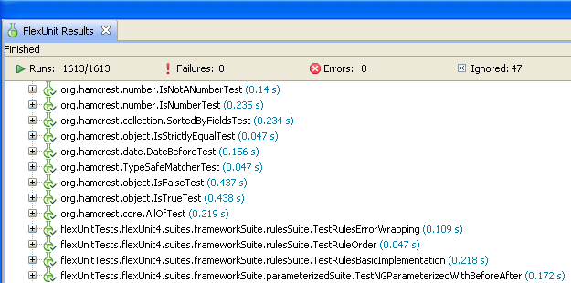

Unit 7 - Using Suites
 Download Unit Project Files
Download Unit Project FilesAs you learned in the last unit, test cases are groups of tests which share a common test fixture. Inherently this means as the number of tests in any project grows, there will become a need for a significant number of test cases which needed to organized and executed.
Suites are the organizational tool used to establish a reasonable scheme for organizing these test cases, allowing you to create a hierarchy of tests that can be executed as one object.
Objectives:
After completing this lesson, you should be able to:
- Create new test case files
- Create new test suite files
- Apply [RunWith] metadata in test suites
- Refactor existing cases for better organization and hierarchy
Topics
In this unit, you will learn about the following topics:
- Writing test suites
- Creating a suite
- Refactoring test cases within suites
- Understanding hierarchy and test result reporting
- Discuss directory structure and approach for new projects
Writing test suites
In previous lessons, we have run several test methods, but they have always been contained within a single test case. Given the nature of test fixtures, almost any project is going to require more than a single test case. Many production applications run thousands of different tests, which may make up hundreds of different cases. Remembering the functions in each test case and knowing which to run in a given situation would be difficult, if not impossible.
To keep all of our test cases organized, and to allow us to run these tests as a group, we use a special type of class called a Suite. A test suite is primarily a collection of test cases that will be executed together. To allow further organization and a hierarchical organization, a suite may also contain other suites.
The suite runner is org.flexunit.runners.Suite. This runner interrogates a class looking for each public variable. It determines the type (Class) of the variable and attempts to run that class.
While it is possible to sort the order of suites and test cases, by default the order in which they execute is indeterminate and not governed by the order of their definition in the suite class.
[Suite]
[RunWith("org.flexunit.runners.Suite")]
public class SampleSuite {
public var testCase:TestCase;
public var anotherTestCase:AnotherTestCase;
public var yetAnotherTestCase:YetAnotherTestCase;
public var anotherSuite:AnotherSuite;
}
Walkthrough 1: Creating a new case for the Constructor Test
In this walkthrough you will reorganize your test cases and prepare to create a new suite. You will perform the following tasks:
- Create a new case named CircleConstructorTest.
- Move the
shouldThrowRangeError()method out of the BasicCircleTest case into the CircleConstructorTest case.
Steps
-
Open the BasicCircleTest.as file from the previous exercise.
-
Alternatively, if you didn't complete the previous lesson or your code is not functioning properly, you can import the FlexUnit4Training_wt1.fxp project from the Unit 7/Start folder. Please refer to Unit 2: Walkthrough 1 for instructions on importing a Flash Builder project.
Creating the CircleConstructorTest.as file -
In Flash Builder's Package Explorer, select the math.testcases package in which your BasicCircleTest.as file is located. Right click on the package and select New > ActionScript Class as shown below:
Figure 1: Package Explorer, creating new objects
-
Set the Package to math.testcases and the Name to CircleConstructorTest, and leave all other fields with the defaults. Click Finish to create the file.
Figure 2: New ActionScript Class window
-
Remove the automatically created constructor from the new ActionScript class, so that it reads as shown.
package math.testcases { public class CircleConstructorTest { } } -
Highlight and cut the
shouldThrowRangeError()method from the BasicCircleTest.as file and paste it into the CircleConstructorTest class.public class CircleConstructorTest { [Test(expects="RangeError")] public function shouldThrowRangeError():void { trace("Test"); var someCircle:Circle = new Circle( new Point( 10, 10 ), -5 ); } }Because you cut and pasted the above function into a new class you will need to manually add the appropriate import statements.
-
Add the import statements for
flash.geom.Pointandnet.digitalprimates.math.Circleto the class. -
Remove the line that reads
trace("Test");from theshouldThrowRangeError()method. -
Save the CircleConstructorTest.as and the BasicCircleTest.as files.
package flexUnitTests.cases { import flash.geom.Point; import net.digitalprimates.math.Circle; public class CircleConstructorTest { [Test(expects="RangeError")] public function shouldThrowRangeError():void { var someCircle:Circle = new Circle( new Point( 10, 10 ), -5 ); } } } -
Run the FlexUnit4Training.mxml file.
If FlexUnit4Training.mxml ran successfully you should see the following output in your browser window:
Figure 3: FlexUnit tests passed
Notice that only ten tests were run. Although CircleConstructorTest case has been created, the test runner is unaware of the new test case, and therefore it does not run. In the FlexUnit4Training.mxml, which was generated by Flash Builder, the BasicCircleTest case is the only set of tests pushed into the
testsToRunarray.In Walkthrough 2, you will create a test suite in order to run both test cases as well as others you will create.
Creating a suite
Suites are simply ActionScript class files with public properties. The class is decorated with two very important pieces of metadata. First, the [Suite] tag, which tells Flash Builder and FlexUnit that this class is intended to be a test suite.
Second, the [RunWith] metadata tells FlexUnit to use the org.flexunit.runners.Suite class to execute this class. You will learn more about extensibility and the [RunWith] metadata later in this unit.
[Suite]
[RunWith("org.flexunit.runners.Suite")]
public class mySuite
Test cases within suites
Within a test suite, all the test cases and other suites are represented by public properties within the class. The sample suite below includes three test cases and additional suite.
[Suite]
[RunWith("org.flexunit.runners.Suite")]
public class MySuite {
public var testCase:TestCase;
public var anotherTestCase:AnotherTestCase;
public var yetAnotherTestCase:YetAnotherTestCase;
public var anotherSuite:AnotherSuite;
}
The anotherSuite variable is another suite that can contain any number of tests and suites. There is no limit to the hierarchy of test suites and each level of suite is only aware of its immediate children
An empty suite (one with no tests or no public tests or suites) will throw an InitializationError.
Understanding the RunWith metadata
A primary goal of FlexUnit was extensibility based on unknown future requirements. While FlexUnit 4 natively includes support for FlexUnit 4.x, FlexUnit .9 and Fluint 1.0 style tests, it was imperative to provide developers an easy way to accommodate new functionality without restricting their freedom to FlexUnit's concept of a test. The [RunWith] metadata is one of the primary means of accomplishing this goal.
When the [RunWith] metadata is used on a class file, it overrides all internal logic that FlexUnit uses to determine the appropriate type of test. Instead it specifies a class that implements the IRunner interface which should be used to execute the contents of this file.
FlexUnit simply instantiates the specified runner and hands over all control until the runner is complete. In this way new test runners can be developed that act and work in radically different ways than the standard components but will integrate cleanly and easily.
The suite runner uses this technique to create test suites. As you have seen so far, the standard FlexUnit runner looks for methods marked with the [Test] metadata and executes each. However, suites are radically different. They are simply a class of properties wherein the type specifies the case or suite. In this case the [RunWith] metadata indicates that the Suite class understands how to execute the contents of this class, facilitating the concept of suites.
At every level of test, FlexUnit re-performs this same logic. This means that different cases and suites can use different runners while all co-existing in the same project and top-level suite.
Support for new testing environments can be added by creating new custom runners and using the [RunWith] metadata with the new runner. The suite runner is only one example of the provided runners with FlexUnit 4.x.
Walkthrough 2: Creating a Test Suite
In this walkthrough you will perform the following tasks:
- Create a test suite to run the two test cases for the Circle class.
Steps
-
Open the testcases package from the previous exercise.
Alternatively, if you didn't complete the previous lesson or your code is not functioning properly, you can import the FlexUnit4Training_wt2.fxp project from the Unit 7/ Start folder. Please refer to Unit 2: Walkthrough 1 for instructions on importing a Flash Builder project.
Create a test suite -
Create an ActionScript class named CircleSuite in the testcases package. Do not specify a superclass or interfaces.
The Package Explorer should look like this after the suite has been created:
Figure 1: Package directory structure after the suite has been created
-
Remove the automatically created constructor from the new ActionScript class. Mark the class with
[Suite]and[RunWith(" org.flexunit.runners.Suite")]metadata tags, which should be placed above the class declaration.[Suite] [RunWith("org.flexunit.runners.Suite")] public class CircleSuite { ... } -
Add a public variable named
test1of typeBasicCircleTestand another public variable namedtest2of typeCircleConstructorTestto the class.[Suite] [RunWith("org.flexunit.runners.Suite")] public class CircleSuite { public var test1:BasicCircleTest; public var test2:CircleConstructorTest; } -
Open the FlexUnit4Training.mxml file.
-
Look under the
<fx:Script>block.Replace this line:
testsToRun.push( BasicCircleTest );with this line:
testsToRun.push( CircleSuite );If you did not use code completion, add the import for testcases.CircleSuite at this time.
-
Save FlexUnit4Training.mxml.
-
Run the FlexUnit4Training.mxml file.
If FlexUnit4Training.mxml ran successfully you should see the following output in your browser window:
Figure 2: FlexUnit tests passed
Understanding hierarchy
Suites allow for the creation of a hierarchy that can be extremely useful when dealing with large projects. The nature of suites or cases would allow you to execute a particular case in the hierarchy by itself, or execute it as a part of any of the suites where it is contained within. For example, you could execute Suite 1 to run the cases beneath it, or execute Suite 0 to run all of Suite 1 plus additional cases.

Test results are not organized by suite inside of Flash Builder premium, which simply sees all of the cases as a flat list. However, it does allow you to see the full package name which still provides some understanding of hierarchy.
Possible directory structures
The unit test package structure for a project should mirror the suite hierarchy, which, in a perfect world, should mirror the hierarchy of the classes being tested.
While there are no rules for how to organize your test cases, the following information can be helpful.
- Think of the organization in terms of an outline. Each topic and subtopic in the outline gets a new package, recursively.
- Just like an outline shouldn't get a subtopic if there is only one item inside of it, do not create a package for just one case.
- Do not be afraid of making the packages deep with fewer cases in each.
- Each time you create a new package, the package should automatically get a test suite to organize the child cases and suites.
- Avoid reach down, meaning that a Suite should only include cases in its own package.
- A suite may include other suites from any package one level below.
Take the family structure presented, for example.
The test structure creates test for a nuclear family. The top level package is testcases, which contains the FamilySuite.as file. Because this application objectifies the nuclear family, the FamilySuite.as file can be arranged accordingly.
import tests.children.ChildrenSuite;
import tests.father.FatherSuite;
import tests.mother.MotherSuite;
[Suite]
[RunWith("org.flexunit.runners.Suite")]
public class FamilySuite {
public var fatherSuite:FatherSuite;
public var motherSuite:MotherSuite;
public var childrenSuite:ChildrenSuite;
}
This is a valid suite despite the fact that it only contains other suites and does not directly contain any test cases.
The
FatherSuitemay include aFatherCase, which is a case specifically for testing the Father object, as well as cases, or other suites, to test items within thetests.father.parentspackage and thetests.father.siblingspackage.The
MotherSuiteincludes theMotherCaseas well as those cases within thetests.mother.parentspackage, because the Mother has only one sibling, TwinSisterCase is included in the mother package.The
OldestSonSuiteincludes theOldestSonCaseas well as theWifeCaseand an empty package named children.Finally
MiddleDaughterCaseandYoungestDaughterCasedo not require a separate package or suite, because all of their family members are represented in the available test cases.
The important thing to note is that the model for organization is based on the actual entity being tested. We could have easily chosen a father-centric model for organization, one where all cases and suites extend in terms of their relationship to the father. In this case, the family is being tested, and the suites and cases are organized as such.
The architecture allows for naming consistency within different packages. Many families have two sets of Grandparents. Fortunately, both the father's parents and the mother's parents can use the names Grandpa.as and Grandma.as for their class files, and ParentsSuite for their suite files.
Also, this organization allows for extensibility. The oldestson package contains an empty package named children, which we can assume is eventually going to contain test cases. If we were to include cousins, for instance, we would want to make suites for the siblings and corresponding packages for them and their children.
Although Flash Builder makes it fairly easy to reorganize class files and directory structure, it is ideal to plan out the application ahead of time, and use a structure that brings organization and consistency to your testing.
Summary
Test suites are used to run multiple FlexUnit cases or suites.
Tests should be refactored into new cases when:
They require different fixture
They require different inputs (i.e. valid vs. invalid)
[RunWith= ""]metadata can be used to run suites, FlexUnit .9 tests, Fluint 1.x tests and other developer-provided runners.Test package hierarchy should ideally reflect the package hierarchy of the project under test.